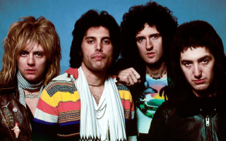
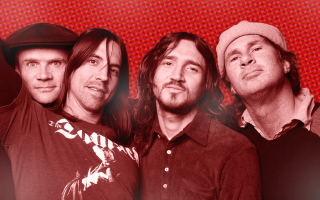
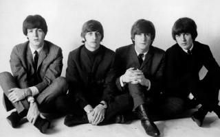
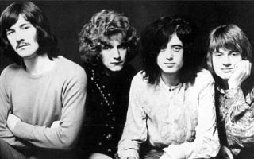
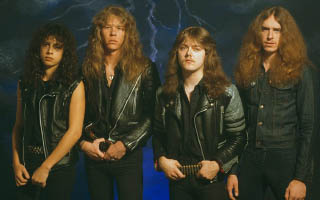
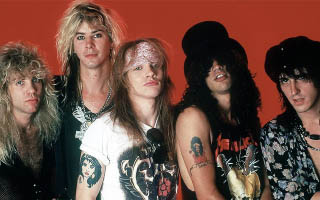

Queen
«Queen» (вимовляється «Квін», укр. «Королева») — британський рок-гурт, створений
1971 року в Лондоні. Від року заснування (1971) і до смерті Фредді Мерк'юрі (1991)
склад гурту залишався незмінним: Мерк'юрі — вокал, фортепіано; Браян Мей — гітара,
вокал; Роджер Тейлор — ударні, вокал; Джон Дікон — бас-гітара, бек-вокал. «Queen»
створював свої ранні роботи під впливом від прогресивного року, хардроку і важкого металу,
але поступово перейшов до традиційнішого

Red Hot Chili Peppers
Red Hot Chili Peppers, американський рок-гурт, заснований в 1983 році в Лос-Анджелесі,
відомий своїм унікальним звучанням, що поєднує в собі рок, фанк, панк та інші жанри.
Гурт складається з вокаліста Ентоні Кідіса, басиста Флі, гітариста Джоша Клінґхоффера
та барабанщика Чеда Сміта. Їхні тексти часто відображають теми кохання, сексу, наркотиків
та духовного пошуку. З понад 80 мільйонами проданих альбомів по всьому світу, Вони
є одними з найвпливовіших рок-гуртів світу.

The Beatles
The Beatles - легендарний британський гурт, що сформувався в Ліверпулі в 1960 році.
Склад гурту включав Джона Леннона, Пола Маккартні, Джорджа Гаррісона та Рінґо Старра.
За короткий час їхньої кар'єри, The Beatles стали найбільш успішними музикантами свого часу,
випустивши безліч хітів, які стали класикою рок-музики. Їхні тексти, мелодії та експерименти
з звуком вплинули на багатьох музикантів та сформували музичну культуру цілої епохи.

Led Zeppelin
Led Zeppelin, британський рок-гурт, заснований у 1968 році у Лондоні, вважається
одним з найважливіших представників хард-року та хеві-металу. Склад гурту включав
Джиммі Пейджа, Роберта Планта, Джона Пола Джонса та Джона Бонема. Їхні твори знамениті
своєю потужною енергією, важкими рифами та епічними соло. З такими хітами, як "Stairway to Heaven"
та "Whole Lotta Love", Led Zeppelin стали одними з найвпливовіших гуртів в історії рок-музики.

Metallica
Metallica - американський треш-метал гурт, заснований в 1981 році в Лос-Анджелесі.
Склад гурту включає Джеймса Гетфілда, Ларса Ульріха, Кірка Геммета та Роберта Трухільо.
Вони відомі своїми агресивними рифами, швидкими темпами та складними аранжуваннями.
Metallica вважаються одними з найуспішніших метал-гуртів у світі, продавши понад 125
мільйонів альбомів і отримавши безліч нагород.

Guns N' Roses
Guns N' Roses - американський хард-рок гурт, сформований у Лос-Анджелесі в 1985 році.
Склад гурту включав Ексла Роуза, Слеша, Даффа Маккагана, Іззі Стредліна та Стівена Адлера.
Гурт отримав величезний успіх завдяки своєму енергійному звучанню, пронизливим текстам
та харизматичному образу. Їхні альбоми, такі як "Appetite for Destruction", стали класикою рок-музики
та продалися мільйонами копій по всьому світу.